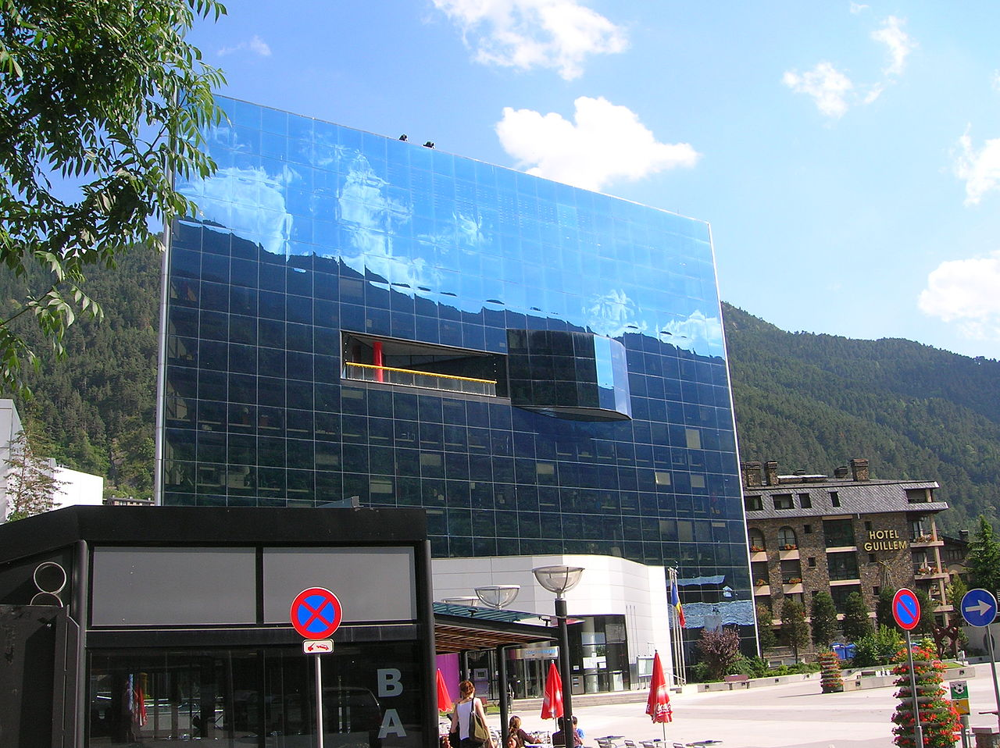

Encamp
- Engolasters
- Centro Deportivo Pas de la Casa
-
Grandvalira

Grandvalira es el dominio de esquí más grande del sur de Europa, con sus 135 kilómetros esquiables.
A parte de esquiar, se puede hacer DE TODO en Grandvalira. Desde dormir en cabañas de madera o iglús en la montaña, a cenar en restaurantes cuyo techo es una cúpula transparente para ver las estrellas, tirolinas, Mushing o motos de nieve.
Pero en verano tampoco se quedan cortos! Se puede hacer piragüismo en un lago de montaña, o si te gusta el Golf, Grandvalira te ofrece el campo de Golf a mayor altitud de Europa! Los niños lo pasarán en grande en el Mont Magic, una zona de fantasía con una infinidad de
actividades culturales y juegos especialmente diseñada para ellos.